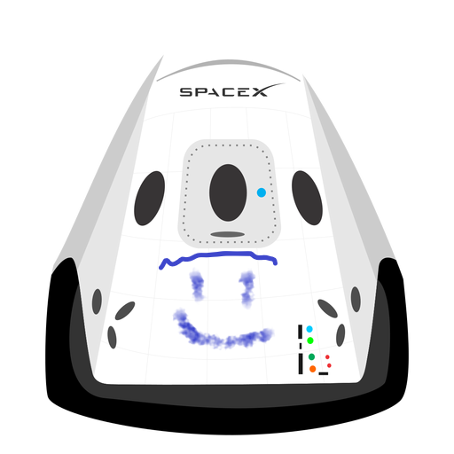

Hyperblog
Tu blog de cabecera
Aquí inicia la historia de un gran proyectocute
Y este es el parrafo de inicio donde vamos a explicar las cosas increibles que se pueden hacer con ramas

Los blogs son la mejor forma de compartir informacion y tus ideas. Mucho mas que ir a conferencias o salir en Youtube. Excepto si eres un rockstar. Pero estadisticamente no lo eres.... por ahora.
Suscribete y dale like